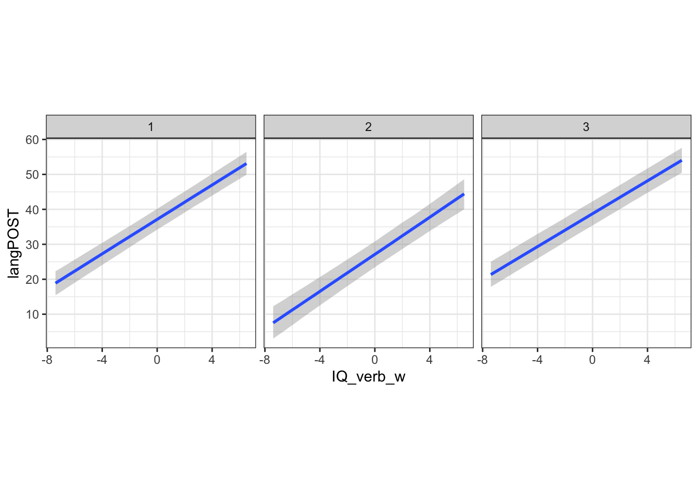

Chapter 7 Multilevel Models
Multilevel data structures are very prevalent in the social sciences and beyond. Depending on how you’re thinking about your data, they show up not only in the classical nested hierarchical format (e.g., kids in classrooms in schools), but we can also think about longitudinal data as having multilevel structure as well. In this chapter we will restrict our discussion to the more classical hierarchical data structure and in the next chapter, we’ll discuss models for panel/longitudinal/TSCS data.
7.1 Data Structure.
The classical multilevel data structure is to have observations nested in higher level groups. For example, we could be interested in both the characteristics of voters and the districts in which they live to predict how the people will vote. We could be interested in the characteristics of elementary school students and their teachers to help understand performance.
One of the key features of data like these is that observations within groups are often more similar than they are with observations from other groups. This measure of inter-group (relative to across-group) similarity is called the intraclass correlation. To the extent that this is non-zero, it suggests that naive assumptions about our observations being exchangeable (or conditionally independent) will not hold. If observations are more alike those in their group, then their residuals will be correlated with the residuals of those in their group. There may also be heteroskedasticity because variation is coming not just from the individual level, but also from the group level.
We’re going to use the mlbook data from the second edition of Tom Snijders and Roel Bosker’s book “Multilevel Analysis”. For those interested, there are great ML resources for R on the book’s website.
The dependent variable of interest here is langpost - the language post-test score. We are interested in the student and school verbal IQ scores iq_verb and sch_iqv, respectively as well as some demographic information about the students and schools.
7.2 Clustering Standard Errors
One thing that people often consider is just clustering their standard errors (or estimating cluster-robust standard errors). These are standard errors that will give approximately right inferences in the presence of arbitrary non-independence within clusters, but assuming independence between clusters. These solve one problem, but as we will discuss later, there remain other problems that could inhibit your ability to make inferences from the model.
The multiwayvcov package has what you need to generate clustered standard errors for GLMs.
Let’s consider a linear model of language post-test score, first without considering the non-independence problem.
library(lmtest)
mod.lm <- glm(langPOST ~ IQ_verb + ses+ sex + Minority, data=mlbook)
ct.lm <- coeftest(mod.lm)
ct.lm##
## z test of coefficients:
##
## Estimate Std. Error z value Pr(>|z|)
## (Intercept) 40.095979 0.156561 256.1038 <2e-16 ***
## IQ_verb 2.399263 0.057741 41.5523 <2e-16 ***
## ses 0.149206 0.010770 13.8542 <2e-16 ***
## sex 2.496239 0.221021 11.2941 <2e-16 ***
## Minority -0.264290 0.531290 -0.4974 0.6189
## ---
## Signif. codes: 0 '***' 0.001 '**' 0.01 '*' 0.05 '.' 0.1 ' ' 1Now, let’s see what happens when we use clustered standard errors.
library(multiwayvcov)
ct.cluster <- coeftest(mod.lm, vcov. = cluster.vcov(mod.lm, cluster=mlbook$schoolnr))
ct.cluster##
## z test of coefficients:
##
## Estimate Std. Error z value Pr(>|z|)
## (Intercept) 40.095979 0.280367 143.0125 <2e-16 ***
## IQ_verb 2.399263 0.074535 32.1898 <2e-16 ***
## ses 0.149206 0.013553 11.0090 <2e-16 ***
## sex 2.496239 0.220226 11.3349 <2e-16 ***
## Minority -0.264290 0.668792 -0.3952 0.6927
## ---
## Signif. codes: 0 '***' 0.001 '**' 0.01 '*' 0.05 '.' 0.1 ' ' 1We could see how different the standard errors are (note that the coefficients don’t change, this is a post hoc fix to the standard errors).
## (Intercept) IQ_verb ses sex Minority
## 1.7907791 1.2908548 1.2584485 0.9964031 1.2588071For everything except the sex variable, the clustered standard errors are about \(25\%\) to \(30\%\) bigger than their corresponding un-clustered counterparts. This is what we would imagine would be the case because essentially we are arguing that we have fewer pieces of independent information that it would seem. That should generally result in larger standard errors, as it did here.
You Try It!
We’re going to be using data from wave 6 of the World Values Survey. I’ve chosen just a few variables and 50 observations from each country to make things a bit quicker to run. You can load in the data with
This will make an object called wvs in your workspace.
- Estimate a model of
resemavalonmoral,sacsecval,income,educ,pr,cl,gdppcandciv.
- See what happens when you use standard errors clustered on
country.
7.3 Between vs Within Relationships.
Lots of people think lots of different ways about why we might use a multilevel model and what it could do for us. The way I like to think about this choice is by considering what kind of effect you want to see. Here’s a toy example from the Snijders and Bosker book that will help motivate the discussion. Here’s what the data look like:
| \(j\) | \(i\) | \(X_{ij}\) | \(\bar{X}_{\cdot j}\) | \(Y_{ij}\) | \(\bar{Y}_{\cdot j}\) |
|---|---|---|---|---|---|
| 1 | 1 | 1 | 2 | 5 | 6 |
| 1 | 2 | 3 | 2 | 7 | 6 |
| 2 | 1 | 2 | 3 | 4 | 5 |
| 2 | 2 | 4 | 3 | 6 | 5 |
| 3 | 1 | 3 | 4 | 3 | 4 |
| 3 | 2 | 5 | 4 | 5 | 4 |
| 4 | 1 | 4 | 5 | 2 | 3 |
| 4 | 2 | 6 | 5 | 4 | 3 |
| 5 | 1 | 5 | 6 | 1 | 2 |
| 5 | 2 | 7 | 6 | 3 | 2 |
where \(j\) is the individual identifier and \(i\) is the group identifier. l \(X_{ij}\) is an individual-level variable and \(\bar{X}_{\cdot j}\) is the group-mean of \(X\). The same convention is used for \(Y\). If we looked at these points without knowing there was a grouping variable and fit a line, we would see the following:
library(ggplot2)
ggplot(sbex, aes(x=X, y=Y)) +
geom_point() +
geom_smooth(method="lm", se=FALSE) +
theme_bw()It looks like that describes the points reasonably well. However, if we recognize that there is a grouping variable maybe we would think differently.
library(dplyr)
ggplot(sbex, aes(x=X, y=Y,
colour=j,
shape=j)) +
geom_point() +
geom_smooth(method="lm") +
theme_bw()The lines connecting each of the points are the within relationship - these tell us within each group, how much we expect \(y\) to change as a function of a one-unit change in \(x\). We could estimate this relationship by using a within transformation, which simply subtracts the group means from each variable in the model:
Here’s the original model:
##
## Call:
## lm(formula = Y ~ X, data = sbex)
##
## Residuals:
## Min 1Q Median 3Q Max
## -2.667 -1.167 0.000 1.167 2.667
##
## Coefficients:
## Estimate Std. Error t value Pr(>|t|)
## (Intercept) 5.3333 1.4530 3.671 0.0063 **
## X -0.3333 0.3333 -1.000 0.3466
## ---
## Signif. codes: 0 '***' 0.001 '**' 0.01 '*' 0.05 '.' 0.1 ' ' 1
##
## Residual standard error: 1.826 on 8 degrees of freedom
## Multiple R-squared: 0.1111, Adjusted R-squared: 2.22e-16
## F-statistic: 1 on 1 and 8 DF, p-value: 0.3466and here’s the within model:
##
## Call:
## lm(formula = Yw ~ Xw, data = sbex)
##
## Residuals:
## Min 1Q Median 3Q Max
## -2.690e-16 1.056e-17 1.056e-17 6.724e-17 6.724e-17
##
## Coefficients:
## Estimate Std. Error t value Pr(>|t|)
## (Intercept) 0.000e+00 3.403e-17 0.000e+00 1
## Xw 1.000e+00 3.403e-17 2.938e+16 <2e-16 ***
## ---
## Signif. codes: 0 '***' 0.001 '**' 0.01 '*' 0.05 '.' 0.1 ' ' 1
##
## Residual standard error: 1.076e-16 on 8 degrees of freedom
## Multiple R-squared: 1, Adjusted R-squared: 1
## F-statistic: 8.633e+32 on 1 and 8 DF, p-value: < 2.2e-16Note that the within effect is exactly 1 and the original effect is actually in the opposite direction.
Another effect we could be interested in is the between effect. This is the regression of the group means of \(Y\) on the group means of \(X\). This tells us what the expected difference between groups on \(Y\) is for a one-unit mean difference across groups on \(X\). This is both interesting in its own right (at least sometimes) and can be quite different. Let’s have a look:
tmp <- sbex %>%
group_by(j) %>%
summarise(X = mean(X), Y = mean(Y))
m3 <- lm(Y ~ X , data=tmp)
summary(m3)##
## Call:
## lm(formula = Y ~ X, data = tmp)
##
## Residuals:
## 1 2 3 4 5
## 1.749e-16 -1.329e-16 -1.289e-16 -4.328e-17 1.301e-16
##
## Coefficients:
## Estimate Std. Error t value Pr(>|t|)
## (Intercept) 8.000e+00 2.241e-16 3.570e+16 <2e-16 ***
## X -1.000e+00 5.281e-17 -1.894e+16 <2e-16 ***
## ---
## Signif. codes: 0 '***' 0.001 '**' 0.01 '*' 0.05 '.' 0.1 ' ' 1
##
## Residual standard error: 1.67e-16 on 3 degrees of freedom
## Multiple R-squared: 1, Adjusted R-squared: 1
## F-statistic: 3.585e+32 on 1 and 3 DF, p-value: < 2.2e-16Here, the effect is the same size, but in the opposite direction as the within effect.
Which one of these effects do we want? Well, it depends on the research hypothesis/question. Sometimes within, sometimes between, maybe sometimes both. As you can see, it would be hard to estimate the between and within effects in the same model. Plus, the degrees of freedom are even different for the two models. For the between effect, we only have \(\# \text{groups}\) degrees of freedom, but for the within effect, we have \(\# \text{Individuals}\) degrees of freedom. The mutlilevel model is built to deal with just this situation.
You Try It!
Estimate the within and between relationships for the model you estimated above.
7.4 Random Intercepts
In its simplest form, the multilevel model is one that allows for a random intercept. That is, it allows for a different intercept for each group. The mathematical notation for the model is:
\[\begin{aligned} y_{ij} &= \alpha_{j} + \beta_{1}X_{ij} + \varepsilon_{ij}\\ \alpha_{j} &= \gamma_{00} + \nu_{j} \end{aligned}\]
where \(X_{ij}\) is an individual-level covariate with coefficient \(\beta\). \(\alpha_{j}\) is the group level intercept. This is clear because it is indexed by the group-indicator \(j\). \(\gamma_{00}\) is the overall or global intercept (essentailly the average of the group intercepts). \(\varepsilon_{ij}\) and \(\nu_{j}\) are idiosyncratic residuals at the individual and group levels respectively. The form of the equation above is called the “structural form”. We often see it in “reduced form” where we substitute the equation for \(\alpha_j\) into the equation for \(y\).
\[y_{ij} = \gamma_{00} + \beta_{1}X_{ij} + \nu_{j} + \varepsilon_{ij}\]
Now, we can think of the term \(\nu_{j} + \varepsilon_{ij}\) as our composite error term that captures variability from both the group and individual levels. It is important to note here that we don’t actually estimate \(\nu_{j}\). Instead, we directly estimate \(\sigma_{\nu}\) where \(\nu_{j} \sim N(0, \sigma_{\nu})\). That is, we estimate the variance of the individual intercepts. Bigger values mean bigger baseline differences in \(Y\) across groups.
7.5 Estimating the Multilevel Model
The main package for estimating multilevel models (in the frequentist context, at least) is the lme4 package. First, we’ll just talk about estimating a two-level model with only level-1 covariates.
## Linear mixed model fit by REML ['lmerMod']
## Formula: Y ~ X + (1 | j)
## Data: sbex
##
## REML criterion at convergence: -45.3
##
## Scaled residuals:
## Min 1Q Median 3Q Max
## -2.893e-05 -1.266e-05 0.000e+00 1.266e-05 2.893e-05
##
## Random effects:
## Groups Name Variance Std.Dev.
## j (Intercept) 5.000e+00 2.236e+00
## Residual 1.308e-09 3.617e-05
## Number of obs: 10, groups: j, 5
##
## Fixed effects:
## Estimate Std. Error t value
## (Intercept) 2.093e-09 1.000e+00 0
## X 1.000e+00 1.144e-05 87433
##
## Correlation of Fixed Effects:
## (Intr)
## X 0.000
## optimizer (nloptwrap) convergence code: -4 (NLOPT_ROUNDOFF_LIMITED: Roundoff errors led to a breakdown of the optimization algorithm. In this case, the returned minimum may still be useful. (e.g. this error occurs in NEWUOA if one tries to achieve a tolerance too close to machine precision.))
## unable to evaluate scaled gradient
## Model failed to converge: degenerate Hessian with 1 negative eigenvaluesAbove, you’ll see a couple of things. For example, you see that the effect of \(X\) is essentially the within-unit effect of 1. Also, you’ll notice that under the “Random effects:” heading, the Groups: j row shows a variance of 5, meaning that the group level intercepts are quite variable while the level 1 residuals have basically no variance. If we wanted to estimate the between relationship, too, we could add the group-mean of \(X\) in to the model.
You Try It!
Use lmer() to estimate a multilevel model similar to the one you estimated above.
- What are the differences?
This would result in a somewhat different model than above, at least from a mathematical point of view. In this case, we would be estimating:
\[\begin{aligned} y_{ij} &= \alpha_{j} + \beta_{1}X_{ij} + \varepsilon_{ij}\\ \alpha_{j} &= \gamma_{00} + \gamma_{01}\bar{X}_{j} + \nu_{j} \end{aligned}\]
Or in the reduced form:
\[y_{ij} = \gamma_{00} + \gamma_{01}\bar{X}_{j} + \beta_{1}X_{ij} + \nu_{j} + \varepsilon_{ij}\]
## Linear mixed model fit by REML ['lmerMod']
## Formula: Y ~ X + Xm + (1 | j)
## Data: sbex
##
## REML criterion at convergence: -450.9
##
## Scaled residuals:
## Min 1Q Median 3Q Max
## -0.8693 -0.8693 -0.8693 -0.5433 0.4347
##
## Random effects:
## Groups Name Variance Std.Dev.
## j (Intercept) 2.088e-30 1.445e-15
## Residual 1.044e-30 1.022e-15
## Number of obs: 10, groups: j, 5
##
## Fixed effects:
## Estimate Std. Error t value
## (Intercept) 8.000e+00 2.167e-15 3.691e+15
## X 1.000e+00 3.231e-16 3.095e+15
## Xm -2.000e+00 6.044e-16 -3.309e+15
##
## Correlation of Fixed Effects:
## (Intr) X
## X 0.000
## Xm -0.797 -0.535
## optimizer (nloptwrap) convergence code: 0 (OK)
## Model failed to converge with max|grad| = 0.531251 (tol = 0.002, component 1)
## Model is nearly unidentifiable: very large eigenvalue
## - Rescale variables?In the model above, the between effect would actually be calculated by taking group means on both sides of the equation.
\[\bar{y}_{j} = \gamma_{00} + \gamma_{01}\bar{X}_{j} + \beta_{1}\bar{X}_{j} + \nu_{j} + \bar{\varepsilon}_{j}\]
So the between effect is really just: \(\gamma_{01} + \beta_1\), which we can see is -1, just like it was in the model above.
In this toy example, the model automatically estimated the within effect for you. The effects in MLMs outside of perfectly-fitting models are not exactly the within effects, though they are generally quite close if the groups are of reasonable size.
Let’s go back to the example about the language test from Snijders and Bosker. To make the previous point clear, just look at the true within effect model:
mlb <- mlbook %>%
group_by(schoolnr) %>%
mutate(iq_w = IQ_verb - mean(IQ_verb),
ses_w = ses - mean(ses),
sex_w = sex - mean(sex),
Minority_w = Minority - mean(Minority),
lp_w = langPOST - mean(langPOST))
summary(wmod <- lm(lp_w ~ iq_w + ses_w + sex_w + Minority_w, data=mlb))##
## Call:
## lm(formula = lp_w ~ iq_w + ses_w + sex_w + Minority_w, data = mlb)
##
## Residuals:
## Min 1Q Median 3Q Max
## -24.425 -3.808 0.330 4.191 20.271
##
## Coefficients:
## Estimate Std. Error t value Pr(>|t|)
## (Intercept) 4.896e-16 9.611e-02 0.000 1.000
## iq_w 2.250e+00 5.397e-02 41.691 <2e-16 ***
## ses_w 1.651e-01 1.115e-02 14.804 <2e-16 ***
## sex_w 2.389e+00 1.985e-01 12.033 <2e-16 ***
## Minority_w -6.974e-02 5.588e-01 -0.125 0.901
## ---
## Signif. codes: 0 '***' 0.001 '**' 0.01 '*' 0.05 '.' 0.1 ' ' 1
##
## Residual standard error: 5.892 on 3753 degrees of freedom
## Multiple R-squared: 0.414, Adjusted R-squared: 0.4134
## F-statistic: 662.9 on 4 and 3753 DF, p-value: < 2.2e-16versus the MLM:
mod.mlm <- lmer(langPOST ~ IQ_verb + ses+ sex + Minority + (1|schoolnr), data=mlbook)
summary(mod.mlm)## Linear mixed model fit by REML ['lmerMod']
## Formula: langPOST ~ IQ_verb + ses + sex + Minority + (1 | schoolnr)
## Data: mlbook
##
## REML criterion at convergence: 24571.6
##
## Scaled residuals:
## Min 1Q Median 3Q Max
## -4.1036 -0.6321 0.0704 0.6913 3.4538
##
## Random effects:
## Groups Name Variance Std.Dev.
## schoolnr (Intercept) 9.403 3.066
## Residual 36.804 6.067
## Number of obs: 3758, groups: schoolnr, 211
##
## Fixed effects:
## Estimate Std. Error t value
## (Intercept) 39.94788 0.25775 154.984
## IQ_verb 2.28643 0.05474 41.772
## ses 0.16281 0.01108 14.691
## sex 2.40778 0.20301 11.860
## Minority -0.14197 0.55032 -0.258
##
## Correlation of Fixed Effects:
## (Intr) IQ_vrb ses sex
## IQ_verb -0.028
## ses 0.013 -0.276
## sex -0.379 0.034 -0.030
## Minority -0.115 0.129 0.092 0.007You’ll note that the effects are very close for most of the variables, though the one for Minority is reasonably different in the MLM versus the true within effect. In fact, what Andrew Bell and Kelvyn Jones (PSRM) suggest is to calculate both the within and between transformations on the variables and then put them both in. This will ensure that you are able to calculate the appropriate effect.
In this particular example with all numeric variables, it’s quite easy, though we’ll talk later on about how it gets more difficult.
mlb <- mlbook %>%
select(schoolnr, IQ_verb, ses, sex, Minority, langPOST) %>%
group_by(schoolnr) %>%
mutate(across(everything(),
.fns = list(w = function(x)x-mean(x),
b = mean)))
mod.mlm2 <- lmer(langPOST ~ IQ_verb_w + IQ_verb_b +
ses_w + ses_b + sex_w + sex_b +
Minority_w + Minority_b + (1|schoolnr),
data=mlb)You can verify by looking above that the _w variables have the same coefficients as those from the within model estimated with the lm() function above.
You Try It!
Estimate the multilevel model with both the between and within variables.
7.5.1 P-values in LMER Output
One thing you’ll notice is that by default, there are no \(p\)-values in the output. This is considered a feature rather than a flaw by the creator of the function (Douglas Bates). There is an interesting exchange on the R listserv about just this point. To save you the time of reading, Bates’ point is that the appropriate reference distribution for the \(p\)-value remains an open question and just because other software produces \(p\)-values, doesn’t mean that R should, too. If, like lots of people, you want \(p\)-values anyway, there are a few ways you can accomplish this. We’ll focus on the one that’s implemented in the lmerTest package for now. The lmerTest package loads an alternative version of lmer that produces standard errors. Here’s how it would work.
library(lmerTest)
mod.mlm2 <- lmer(langPOST ~ IQ_verb_w + IQ_verb_b +
ses_w + ses_b + sex_w + sex_b +
Minority_w + Minority_b + (1|schoolnr),
data=mlb)
summary(mod.mlm2)## Linear mixed model fit by REML. t-tests use Satterthwaite's method ['lmerModLmerTest']
## Formula: langPOST ~ IQ_verb_w + IQ_verb_b + ses_w + ses_b + sex_w + sex_b +
## Minority_w + Minority_b + (1 | schoolnr)
## Data: mlb
##
## REML criterion at convergence: 24555.3
##
## Scaled residuals:
## Min 1Q Median 3Q Max
## -4.1048 -0.6299 0.0708 0.6891 3.4571
##
## Random effects:
## Groups Name Variance Std.Dev.
## schoolnr (Intercept) 8.838 2.973
## Residual 36.793 6.066
## Number of obs: 3758, groups: schoolnr, 211
##
## Fixed effects:
## Estimate Std. Error df t value Pr(>|t|)
## (Intercept) 39.35372 0.87775 224.14387 44.835 <2e-16 ***
## IQ_verb_w 2.25023 0.05557 3541.36099 40.495 <2e-16 ***
## IQ_verb_b 3.47030 0.31195 219.02545 11.125 <2e-16 ***
## ses_w 0.16513 0.01148 3541.36099 14.380 <2e-16 ***
## ses_b 0.06908 0.04421 199.21218 1.562 0.120
## sex_w 2.38858 0.20436 3541.36099 11.688 <2e-16 ***
## sex_b 3.54642 1.72557 224.87064 2.055 0.041 *
## Minority_w -0.06974 0.57535 3541.36099 -0.121 0.904
## Minority_b 0.56204 1.89904 222.00697 0.296 0.768
## ---
## Signif. codes: 0 '***' 0.001 '**' 0.01 '*' 0.05 '.' 0.1 ' ' 1
##
## Correlation of Fixed Effects:
## (Intr) IQ_vrb_w IQ_vrb_b ses_w ses_b sex_w sex_b Mnrty_w
## IQ_verb_w 0.000
## IQ_verb_b -0.058 0.000
## ses_w 0.000 -0.264 0.000
## ses_b 0.106 0.000 -0.498 0.000
## sex_w 0.000 0.035 0.000 -0.027 0.000
## sex_b -0.958 0.000 0.027 0.000 -0.108 0.000
## Minority_w 0.000 0.122 0.000 0.085 0.000 0.003 0.000
## Minority_b -0.214 0.000 0.258 0.000 0.074 0.000 0.107 0.000In the summary above, you can see that the degrees of freedom are different for each of the _b variables. These are close to the number of groups (211).
You Try It!
Use the lmerTest package to get \(p\)-values for your coefficients in the previous model.
We can use the ggeffects package to help us plot the effects here.
library(ggeffects)
g1 <- ggpredict(mod.mlm2, "IQ_verb_w", type="random")
g2 <- ggpredict(mod.mlm2, "IQ_verb_w", type="fixed")
g1$type = factor(1, levels=1:2, labels=c("Fixed", "Random"))
g2$type = factor(2, levels=1:2, labels=c("Fixed", "Random"))
g <- bind_rows(g1, g2)Let’s look at the two effect types:
ggplot(g, aes(x=x, y=predicted,
colour=type,
fill=type)) +
geom_ribbon(aes(ymin=conf.low,
ymax=conf.high),
alpha=.15,
col="transparent") +
geom_line() +
theme_bw() +
theme(legend.position = "top") +
labs(x="Verbal IQ (within)",
y="Predicted Language Post-test Score",
colour="Interval Type",
fill="Interval Type")We can add random coefficients to the model - these allow the coefficients of variables to vary by group. The model would look like this:
\[\begin{aligned} y_{ij} &= \alpha_{j} + \beta_{1j}X_{ij} + \varepsilon_{ij}\\ \alpha_{j} &= \gamma_{00} + \gamma_{01}\bar{X}_{j} + \nu_{1j}\\ \beta_{1j} &= \gamma_{10} + \gamma_{11}\bar{X}_{j} + \nu_{2j} \end{aligned}\]
Or in the reduced form:
\[y_{ij} = \gamma_{00} + \gamma_{01}\bar{X}_{j} + \gamma_{10}X_{ij} + \gamma_{11}X_{ij}\bar{X}_{j} + \nu_{2j}X_{ij} + \nu_{j} + \varepsilon_{ij}\]
There are a few things to note here. First, it is assumed that \(\nu_{j}\sim N_{2}\left(\mathbf{\mu}, \mathbf{\Sigma}\right)\). Also you can see some heteroskedasticity built in to the model as the residuals are a function of \(X\) through the \(\nu_{2j}X_{ij}\) term. Finally, you can see that the way that level-2 variables effect the random coefficients is through an intercation (in this context, called a “cross-level interaction”) between the level-1 variable that has the random coefficient and the level-2 variable meant to predict that random coefficient.
We could do this with the verbal IQ score and its school-level mean.
mod.mlm3 <- lmer(langPOST ~ IQ_verb_w*IQ_verb_b +
ses_w + ses_b + sex_w + sex_b +
Minority_w + Minority_b +
(1+ IQ_verb_w| schoolnr),
data=mlb)
summary(mod.mlm3)## Linear mixed model fit by REML. t-tests use Satterthwaite's method ['lmerModLmerTest']
## Formula: langPOST ~ IQ_verb_w * IQ_verb_b + ses_w + ses_b + sex_w + sex_b +
## Minority_w + Minority_b + (1 + IQ_verb_w | schoolnr)
## Data: mlb
##
## REML criterion at convergence: 24526.7
##
## Scaled residuals:
## Min 1Q Median 3Q Max
## -4.1201 -0.6297 0.0726 0.6835 3.0316
##
## Random effects:
## Groups Name Variance Std.Dev. Corr
## schoolnr (Intercept) 8.946 2.9910
## IQ_verb_w 0.188 0.4335 -0.70
## Residual 36.083 6.0069
## Number of obs: 3758, groups: schoolnr, 211
##
## Fixed effects:
## Estimate Std. Error df t value Pr(>|t|)
## (Intercept) 39.22722 0.84962 232.30831 46.170 <2e-16 ***
## IQ_verb_w 2.27104 0.06397 197.15338 35.500 <2e-16 ***
## IQ_verb_b 3.43997 0.30715 228.15952 11.200 <2e-16 ***
## ses_w 0.16626 0.01143 3536.93552 14.545 <2e-16 ***
## ses_b 0.04483 0.04210 196.29448 1.065 0.2882
## sex_w 2.37629 0.20346 3536.35974 11.680 <2e-16 ***
## sex_b 3.97564 1.66790 232.32685 2.384 0.0179 *
## Minority_w 0.12227 0.58238 3273.74604 0.210 0.8337
## Minority_b -1.19277 1.78364 194.44191 -0.669 0.5045
## IQ_verb_w:IQ_verb_b -0.13398 0.06995 211.18343 -1.915 0.0568 .
## ---
## Signif. codes: 0 '***' 0.001 '**' 0.01 '*' 0.05 '.' 0.1 ' ' 1
##
## Correlation of Fixed Effects:
## (Intr) IQ_vrb_w IQ_vrb_b ses_w ses_b sex_w sex_b Mnrty_w Mnrty_b
## IQ_verb_w -0.068
## IQ_verb_b -0.049 -0.009
## ses_w 0.006 -0.229 0.008
## ses_b 0.101 -0.001 -0.484 -0.015
## sex_w 0.000 0.030 0.004 -0.025 -0.006
## sex_b -0.956 -0.013 0.020 -0.006 -0.102 0.000
## Minority_w -0.010 0.101 0.019 0.084 -0.008 0.006 0.005
## Minority_b -0.205 -0.013 0.247 -0.002 0.070 0.000 0.101 0.047
## IQ_vr_:IQ__ -0.003 0.023 -0.227 -0.017 -0.028 -0.022 0.004 -0.101 -0.029You Try It!
Estimate the multilevel model with a random coefficient on the within effect of democ_max and a cross-level interaction with pr and cl
We could then plot out the different random coefficients.
g2 <- ggpredict(mod.mlm3,
terms=c("IQ_verb_w",
"IQ_verb_b [.04]",
"schoolnr [sample=10]"),
type="random")
ggplot(g2, aes(x=x, y=predicted, colour=facet)) +
geom_line() +
theme_bw() +
theme(legend.position = "top") +
labs(x="IQ Verbal Score (within)",
y="Predicted Language Post-test Score",
colour="School")You Try It!
Plot out some of the random effects from the model above.
7.6 Other Random-Effects Models
The lme4 package also has a function glmer() which estimates random-effect GLMs in R with exactly the same syntax and the addition of a family= argument which takes as values any of the GLM families in R.
The ordinal package has a function clmm() which has similar syntax to the lmer() function, but for ordinal logistic and probit models. Here, the thershold parameters are all shifted up or down by the same amount by the random effect.
The mlogit() function in the mlogit package can estimate a random-effect multinomial logit through the rpar argument.
7.7 Bayesian Models with BRMS
One of the potential problems above is that with random effects the frequentist models do not produce confidence intervals for the predictions. The brms package has a function brm, which uses the same syntax as glmer(), but estimates a Bayesian model with Stan. If you look at the help for brmsfamily(), you will see all of the different families you can use. These include all of the GLM families and many others including multinomial and cumulative links - unifying all of the models we’ve talked about before.
Let’s look at the same model as above, but using the brm() function.
library(brms)
b.mlm3 <- brm(langPOST ~ IQ_verb_w*IQ_verb_b +
ses_w + ses_b + sex_w + sex_b +
Minority_w + Minority_b + (1|schoolnr),
data=mlb)You Try It!
Use the brms package to estimate the above model in the Bayesian context.
We can plot marginal effects from this model either by using the conditional_effects() function or by using the predict() function handing the new data. Here is the effect if IQ_verb_w on langPOST for a few different values of IQ_verb_b, just considering the fixed effect parameters.
c1 <- conditional_effects(b.mlm3, effects="IQ_verb_w:IQ_verb_b")
plot(c1)$`IQ_verb_w:IQ_verb_b` + theme_bw()We could do the same thing, but including the random effect variance.
c2 <- conditional_effects(b.mlm3, effects="IQ_verb_w:IQ_verb_b",
re_formula = ~ (1|schoolnr))
plot(c2)$`IQ_verb_w:IQ_verb_b` + theme_bw()Here, the intervals are understandably larger. We could also look at a few schools in particular. In the code below, we are picking three schools (numbered 1, 2 and 3) and we’re also going to supply their specific values of IQ_verb_b as conditions to plot.
conditions <- mlb %>%
filter(schoolnr %in% 1:3) %>%
select(schoolnr, IQ_verb_b) %>%
group_by(schoolnr) %>%
summarise_all(mean)
c3 <- conditional_effects(b.mlm3, effects="IQ_verb_w",
re_formula = ~ (1|schoolnr),
conditions = conditions)
plot(c3)$`IQ_verb_w` +
theme_bw() +
theme(aspect.ratio=1)
The IQ_verb_w element of c3 holds all of the data for plotting. You could make your own plot if you wanted.
ggplot(c3$IQ_verb_w, aes(x=IQ_verb_w,
y=estimate__,
colour=cond__,
fill = cond__)) +
geom_ribbon(aes(ymin=lower__,
ymax=upper__),
alpha=.15,
col="transparent") +
geom_line() +
theme_bw() +
theme(legend.position="top") +
labs(x="IQ Verbal Score (within)",
y = "Predicted Language Post-test Score",
colour="School",
fill="School")You Try It!
Calculate and plot the conditional effect of democ_max from the model above.
This is a quite powerful tool for understanding the variability of effects in a way that is quite difficult in the frequentist inferential paradigm.